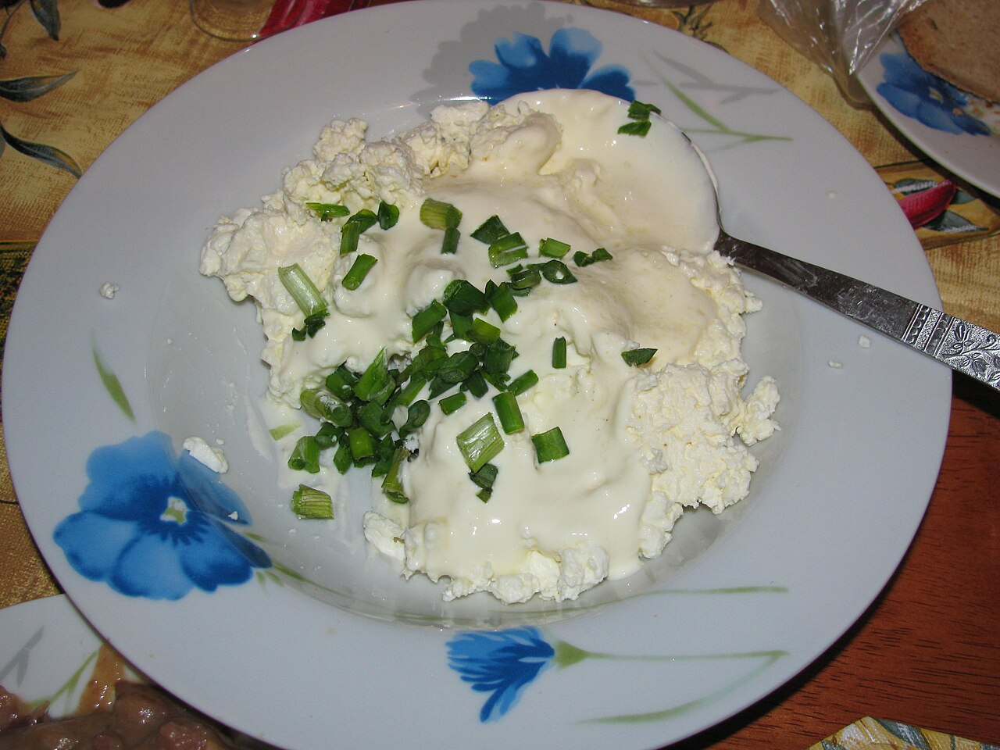
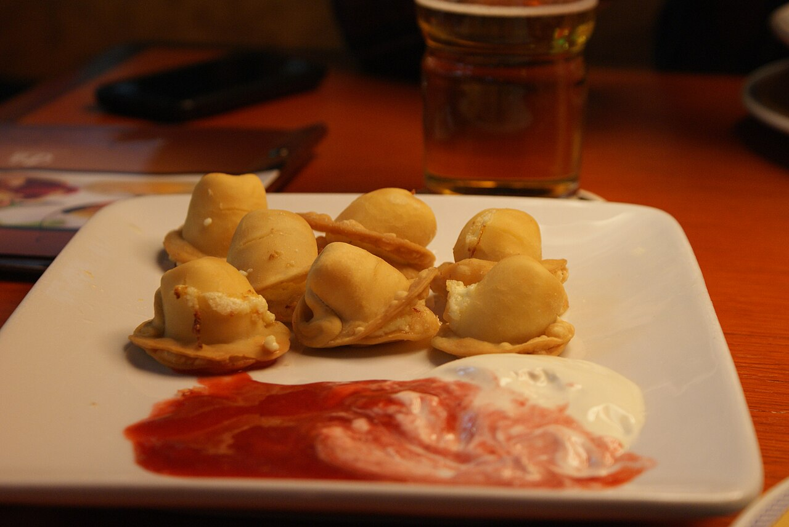
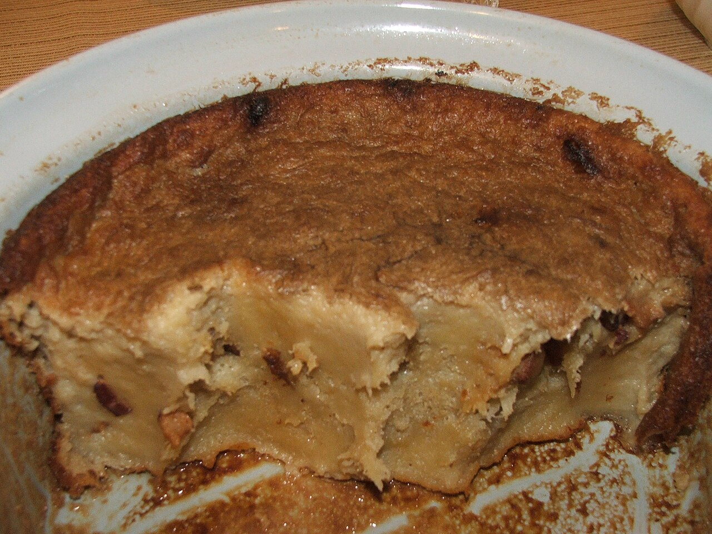
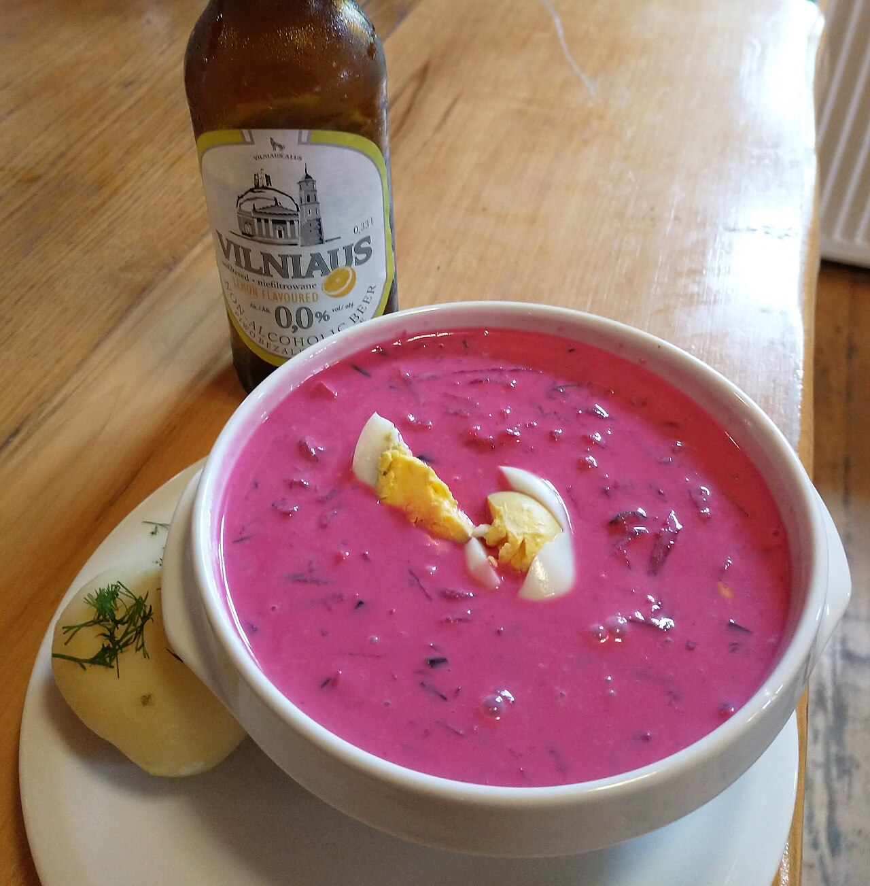
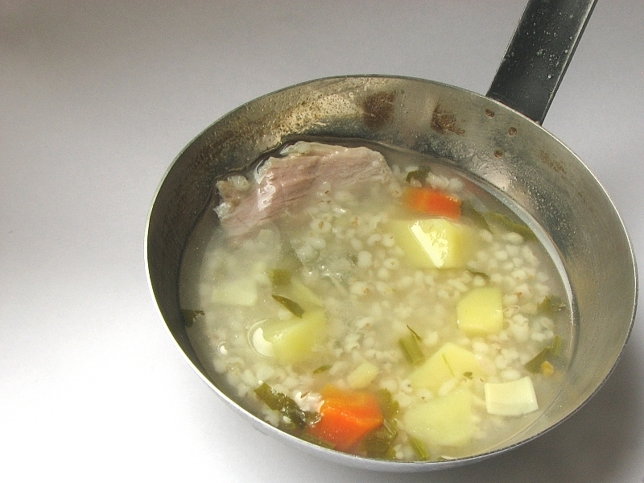
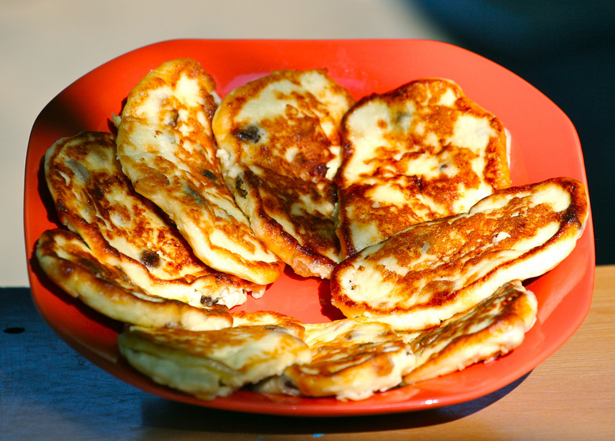
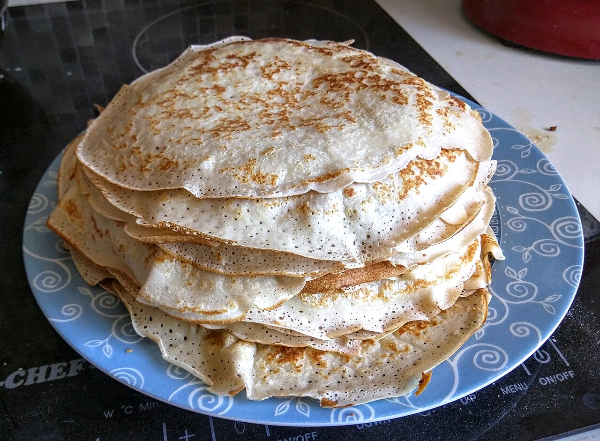
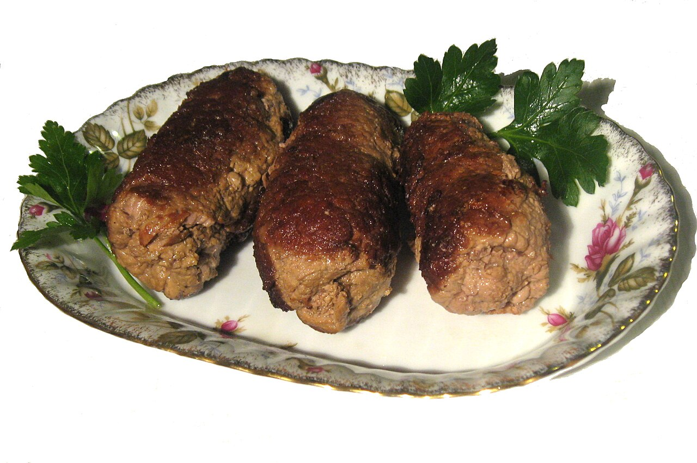
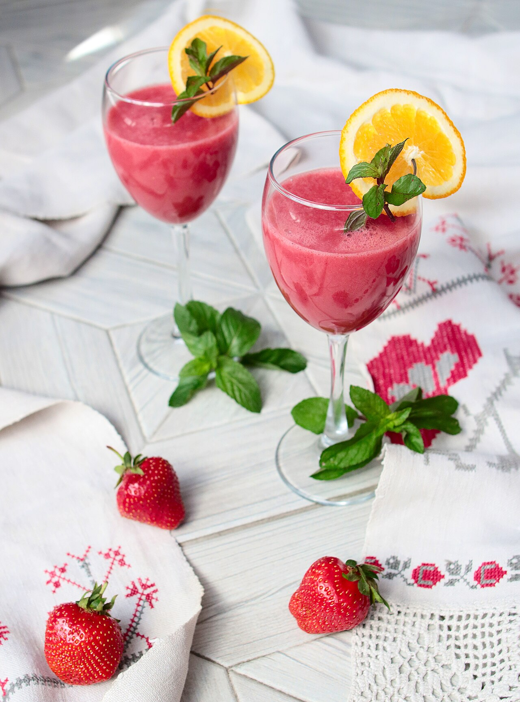
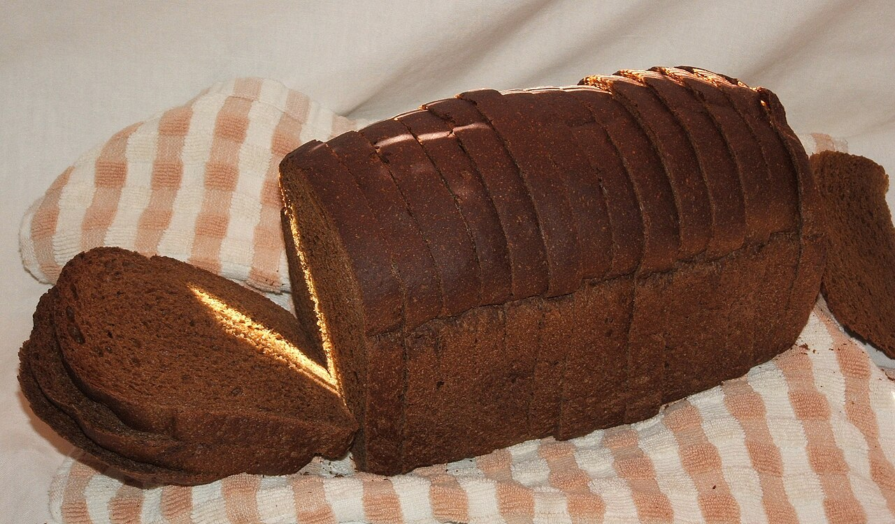

대표 음식 15종
사진은 Wikimedia Commons에 공개된 실제 촬영본이며, 저작자와 라이선스를 각 사진 아래에 적었습니다. 촬영한 식당·지역·조리법에 따라 실제 모습은 다를 수 있습니다. 맞는 사진을 아직 찾지 못한 4곳은 비워 두었습니다.
-

사진: Rabbi Mendl · CC BY-SA 4.0 · Wikimedia Commons 드라니키Дранікі
감자 경작문화의 대표 음식이며 우크라이나 데루니와 닮았지만 지역·가정 조리법 차이를 보여준다.
-

사진: Kagor · CC BY-SA 3.0 · Wikimedia Commons 마찬카Мачанка
두껍게 만든 고기 소스에 얇은 블리니나 드라니키를 찍어 먹는 식문화.
-

사진: Хомелка · CC BY-SA 3.0 · Wikimedia Commons 칼두니Калдуны
리투아니아·폴란드 접경에서 발달한 만두/감자속채움 변형이 여러 가지다.
-

사진: Eugene Zelenko · CC BY-SA 4.0 · Wikimedia Commons 감자 바브카Бабка бульбяная
감자를 오븐에 천천히 구워 만든 캐서롤로 농촌 가정의 대표적인 식사.
-
사진 준비 중
맞는 사진을 구하는 대로 채웁니다. 다른 사진으로 대신하지 않습니다. 클레츠키Клёцкі
작은 둥근 반죽 덤플링으로 수프에 넣거나 별도 주식으로 제공.
-
사진 준비 중
맞는 사진을 구하는 대로 채웁니다. 다른 사진으로 대신하지 않습니다. 베라슈차카Верашчака
전통 소스가 있는 고기조림의 이름으로 문헌·가정에서 다양한 변형.
-

사진: MOs810 · CC BY-SA 4.0 · Wikimedia Commons 할라드니크Халаднік
보라빛 분홍색 냉수프로 여름 식탁에서 흔하며 리투아니아식 차가운 비트수프와도 공유.
-

사진: Mariuszjbie · CC BY-SA 3.0 · Wikimedia Commons 크루프니크Крупнік
폴란드·벨라루스 접경의 보리수프 범주. 지역마다 육수·곡물 조합 변화.
-

사진: Juerg Vollmer from Zürich, Switzerland ; cut by Off-shell · CC BY-SA 2.0 · Wikimedia Commons 시르니키Сырнікі
인접 지역과 공유하는 유제품 팬케이크로 아침·간식·디저트에 제공.
-

사진: Maksym Kozlenko · CC BY-SA 4.0 · Wikimedia Commons 날리스니키Наліснікі
얇은 팬케이크를 말아 채우는 가정식. 지역별 단맛·짠맛 변형.
-

사진: user:Kuruni, modification Przykuta · CC BY-SA 4.0 · Wikimedia Commons 즈라지Зразы
폴란드-리투아니아 연방 문화권에서 널리 보이는 속채움 음식으로 국가 단독 기원 주의.
-
사진 준비 중
맞는 사진을 구하는 대로 채웁니다. 다른 사진으로 대신하지 않습니다. 폴리우카Поліўка
폴레시아 숲과 버섯채취 식문화를 연결하는 농촌 국물요리.
-
사진 준비 중
맞는 사진을 구하는 대로 채웁니다. 다른 사진으로 대신하지 않습니다. 키셀Кісель
베리 과즙을 걸쭉하게 만든 음료·디저트로 동슬라브 문화권에 공통.
-

사진: Maria Romanovskaya · CC BY-SA 4.0 · Wikimedia Commons 쿨라가Кулага
베리와 곡물을 이용하는 전통 디저트로 시골 식생활 소개에 적합.
-

사진: Glane23 · CC BY-SA 3.0 · Wikimedia Commons 호밀빵Жытні хлеб
감자·버섯·절임채소와 함께 먹는 전통 곡물 가공문화의 축.
함께 알아두면 좋은 점
- 알레르기·식단: 성분과 조리법은 식당·가정마다 달라 일반화할 수 없습니다. 알레르기나 식단 제한이 있다면 주문 전에 직접 확인하세요.